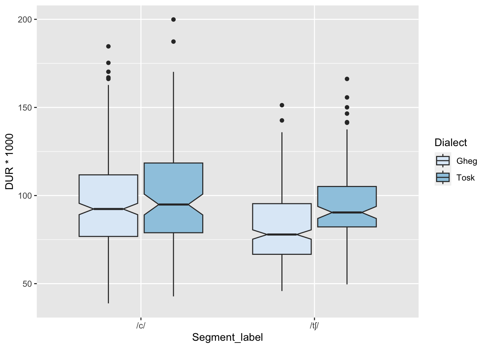

Data Visualisation
Installing ggplot
One package commonly used for data visualization in R is
ggplot2. This package is often referred to as just
“ggplot”.
To install the ggplot2 package, type the following:
install.packages("ggplot2")
Loading ggplot
To load ggplot2, type:
library(ggplot2)Creating plots using ggplot
albanian_data <- read.csv("Affricate_plosive_measures_for_workshop.csv", stringsAsFactors = T)The code below requires that dplyr be installed. I use
it here to rename some factors that are not intuitive and would require
a lot of relabelling in plots otherwise.
library(dplyr)
albanian_data$Bi.mon <- recode_factor(albanian_data$Bi.mon, `1` = "Monolingual", `2` = "Bilingual")
albanian_data$Segment_label <- recode_factor(albanian_data$Segment_label, "q" = "/c/", "ç" = "/tʃ/")
albanian_data$Position_label <- recode_factor(albanian_data$Position_label, "on" = "Onset", "med" = "Medial")
albanian_data <- albanian_data %>% filter(Participant != "1" & Participant != "7")In order to create a plot, you first need to call the
ggplot function. To do this type ggplot(). The
first thing you need to consider is the data which you want to
visualise. To do this, you need to include the name of your data as an
argument, e.g. ggplot(data = albanian_data) or you can
shorten this, by simply including the name of your data as the first
thing within the parentheses, e.g. ggplot(albanian_data).
The second thing to think about is the inclusion of mapping.
Mapping aesthetics link your data to the appearance of the graph. For
instance, mapping is used to outline what is depicted on the X and Y
axes, and determine attributes such as the size, shape and colour of
different data points.
To do this, you call the aes function,
e.g. ggplot(data = albanian_data, aes(x = Bi.mon, y = COG_MID))
ggplot(data = albanian_data, aes(x = Bi.mon, y = COG_MID)) # data and aesthetic mappingWe have data, and we have aesthetic mapping, but we haven’t yet
specified what kind of plot we want to produce. The next thing we need
to consider are layers. Layers determine the kind of plot that is
shown, such as scatterplots, barplots, maps, etc. Layers are added using
geom functions. For example, geom_point() would be
used to create a scatterplot, geom_boxplot() would be used
for boxplots, and geom_bar() for bar charts.
For example, a boxplot could be created as follows:
ggplot(data = albanian_data, aes(x = Bi.mon, y = COG_MID)) +
geom_boxplot() # We have now added a boxplot layergeom_bar()
Barplots are used to display the relationship between a numerical variable and a categorical variable.
The most basic kind of barplot in R, shows the count - or number of tokens - for each level of a categorical variable.
For example, a bar plot could be used to show how many tokens
occurred in initial versus medial position. To do this, we can use the
geom_bar() function. In terms of mapping, only a value for
the x-axis is needed. In this case, under aes(), we would
just include x = Position_label.
ggplot(data = albanian_data, aes(x = Position_label)) +
geom_bar()You can see that ‘count’ is automatically displayed along the y-axis.
If you wanted to change the colour of the bars, you could do this using
fill within the aesthetic mapping function
aes():
ggplot(data = albanian_data, aes(x = Position_label, fill = Position_label)) +
geom_bar()There are so many things that you can modify in ggplot. I will discuss a few below. However, there is a lot of information about this available online. Cheat sheets like this can be super helpful.
By default, the bars will be in colour. You can change the colour
scheme, so that your results are displayed in black and white, using
scale_fill_grey(), as below:
ggplot(data = albanian_data, aes(x = Position_label, fill = Position_label)) +
geom_bar() +
scale_fill_grey()Here the legend is a little redundant, so you can remove this by modifying the theme, changing the legend position to “none”, as you can see below:
ggplot(data = albanian_data, aes(x = Position_label, fill = Position_label)) +
geom_bar() +
scale_fill_grey() +
theme(legend.position = "none") You can also play around with the theme. For example, adding
theme_bw():
ggplot(data = albanian_data, aes(x = Position_label, fill = Position_label)) +
geom_bar() +
scale_fill_grey() +
theme_bw() +
theme(legend.position = "none") Or theme_classic():
ggplot(data = albanian_data, aes(x = Position_label, fill = Position_label)) +
geom_bar() +
scale_fill_grey() +
theme_classic() +
theme(legend.position = "none") 
If you are unhappy with the x and y labels in your charts, you can
modify these using labs(). Here the label ‘Position_label’
is a little ugly, so we can change it to ‘Position’, by specifying
x = "Position". You can also add a title, using the
labs() function, by specifying title =
ggplot(data = albanian_data, aes(x = Position_label, fill = Position_label)) +
geom_bar() +
scale_fill_grey() +
theme_classic() +
theme(legend.position = "none") +
labs(x = "Position", y = "Count", title = "Token count: onset versus medial position")You can also look at something other than count along the y-axis of a barplot.
To do this, let’s work with some fabricated articulation rate data, with data points for two speakers:
library(readxl)
articulation_rate <- read_excel("Articulation Rate.xlsx")Now we can plot the data. Note the addition of
stat = "identity" within the geom_bar()
function.
ggplot(data = articulation_rate, aes(x = `Intonational phrase`, y = `Articulation rate`, fill = Speaker)) +
geom_bar(stat = "identity") # stat = "identity" lets you include your own label for the y-axis. If you didn't have this, you would get an error message and nothing would happen.You might have noticed that the labels for the x-axis and y-axis, are included within backticks ` - this is because the column names contain spaces. Without the backticks, you would receive error messages.
However, there is a problem with the output we have above. The data for each of the two speakers are stacked on top of eachother. In this case, let’s assume that we don’t want to see a sum of the values for each speaker. We want to see their values side-by-side.
To do this, we can add an additional argument to the geom_bar
function: position = position_dodge():
ggplot(data = articulation_rate, aes(x = `Intonational phrase`, y = `Articulation rate`, fill = Speaker)) +
geom_bar(stat = "identity", position = position_dodge())You can build on this further, by adding labels, e.g.:
ggplot(data = articulation_rate, aes(x = `Intonational phrase`, y = `Articulation rate`, fill = Speaker)) +
geom_bar(stat = "identity", position = position_dodge()) +
geom_text(aes(label = round(`Articulation rate`, 3)), position = position_dodge(.9), vjust = 1.5)geom_boxplot()
Box plots (or box-and-whisker plots) are commonly used to visualise
the relationship between a categorical variable and a numeric variable.
Box plots display median values, the distribution of data, and can be
used to identify outliers. We can make a basic boxplot using the
geom_boxplot() function:
ggplot(data = albanian_data, aes(x = Segment_label, y = DUR*1000)) +
geom_boxplot()You can also add notches. Notches offer a rough guide as to whether
there is a significant difference between median values. We can do this
by adding the argument notch = TRUE, within the
geom_boxplot() function.
ggplot(data = albanian_data, aes(x = Segment_label, y = DUR*1000)) +
geom_boxplot(notch = TRUE)
We could also look at groups of speaker using
fill =:
ggplot(data = albanian_data, aes(x = Segment_label, y = DUR*1000, fill = Dialect)) +
geom_boxplot(notch = TRUE) +
scale_fill_brewer() # This just shows you one way of changing the colour palette when you have used the fill argument above.Let’s say you aren’t happy with the labels for dialect in the legend.
Here, they are coming from fill. Because we are modifying
fill using scale_fill_brewer(), we can add an
argument to change the labels, like so:
ggplot(data = albanian_data, aes(x = Segment_label, y = DUR*1000, fill = Dialect)) +
geom_boxplot(notch = TRUE) +
scale_fill_brewer(labels = c("G" = "Gheg", "T" = "Tosk"))
If you wanted to plot out groups separately, rather than
side-by-side, you could use facet_grid():
ggplot(data = albanian_data, aes(x = Segment_label, y = DUR*1000, fill = Dialect)) +
geom_boxplot(notch = TRUE) +
scale_fill_brewer(guide = "none") +
facet_grid(~ Dialect)Changing the labels for a facet_grid is a little trickier. First, you can create a vector containing the labels.
dialect.labels <- c("G" = "Gheg", "T" = "Tosk")Then you can add these labels like so, using
labeller:
ggplot(data = albanian_data, aes(x = Segment_label, y = DUR*1000, fill = Dialect)) +
geom_boxplot(notch = TRUE) +
scale_fill_brewer(guide = "none") +
facet_grid(~ Dialect, labeller = labeller(Dialect = dialect.labels))
Really, it can be easier to just change the data, like I did at the top of the page:
albanian_data$Dialect <- recode_factor(albanian_data$Dialect, "G" = "Gheg", "T" = "Tosk")Now you don’t need to mess around with changing labels:
ggplot(data = albanian_data, aes(x = Segment_label, y = DUR*1000, fill = Dialect)) +
geom_boxplot(notch = TRUE) +
scale_fill_brewer(guide = "none") +
facet_grid(~ Dialect)geom_violin()
Violin plots are very similar to boxplots, but can help display the
distribution of the data. Wider portions mean a greater number of data
points in that region. To include a violin plot, add
geom_violin():
ggplot(data = albanian_data, aes(x = Segment_label, y = DUR*1000)) +
geom_violin()You can also overlay boxplots onto violin plots, like so:
ggplot(data = albanian_data, aes(x = Segment_label, y=COG_MID)) +
geom_violin() +
geom_boxplot(width=0.1)geom_point()
A scatterplot is used to show the relationship between two numerical
variables. You can produce a scatterplot by using
geom_point().
For example, if you were interested in the relationship between centre of gravity (COG) and duration in ms, you could type the following, if looking at the Albanian data:
ggplot(data = albanian_data, aes(x = COG_MID, y = DUR*1000)) +
geom_point()
Scatterplots are interesting in that they can be used to create vowel plots. We will work through an example here.
First, let’s read in some data:
Vowel_data <- read.csv("Vowels_to_plot.csv")Next, we can focus in on one speaker to start with:
Vowel_data_A <- subset(Vowel_data, Speaker == "A")Let’s plot them:
ggplot(data = Vowel_data_A, aes(x = F2, y = F1, colour = Vowel)) +
geom_point()This is a good start, but the chart would look even better if we
flipped the x and y axes so that the plot more closely resembled a
traditional vowel chart (F1 decreasing on the y-axis, reflecting vowel
height; F2 decreasing along the x-axis reflecting vowel frontedness). We
can do this by using scale_x_reverse and
scale_y_reverse respectively:
ggplot(data = Vowel_data_A, aes(x = F2, y = F1, colour = Vowel)) +
geom_point() +
scale_x_reverse() +
scale_y_reverse()This is looking better, but the vowels could be clearer. Referring back and forth between the legend and the chart makes reading the plot more difficult than it needs to be:
ggplot(data = Vowel_data_A, aes(x = F2, y = F1, colour = Vowel)) +
geom_point() +
scale_x_reverse() +
scale_y_reverse() +
geom_label(aes(label = Vowel), size = 8) + # Here we are adding the labels for each vowel directly into the graph
guides(label = "none", colour = "none") # This deletes the legend, which isn't needed anymore.If you want to look at more than one speaker simultaneously, you can.
Adding geom_polygon() creates a line between each of the
vowels for each speaker, which helps make the graph a little easier to
read.
ggplot(Vowel_data, aes(x = F2, y = F1, colour = Speaker, label = Vowel, group = Speaker)) + # Colour and Group are separating out each Speaker here
geom_text(size = 6, show.legend = FALSE) + # We want a legend for speaker, but not for vowel, which is why show.legend = FALSE
geom_polygon(aes(fill = Speaker, linetype = NA), alpha = .1) + # Setting linetype to NA means you don't have a visible line joining up each vowel. Alpha changes how transparent the polygons are: a lower value means it is more transparent. If alpha was 1, you would see blocks of colour and it would be difficult to make out speaker A's vowel plot.
theme_bw() +
scale_x_reverse() +
scale_y_reverse() +
theme(legend.position = "right")